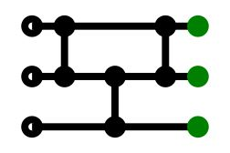
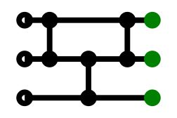

1. Introduction
Conventinonal Median Filter is very easy to be implementated by using standard sorting algorithms like quicksort. However, it's hard to optimize the algorithm by using parallel processing.
With sorting network consisting of basic comparing and swap, a parallel processing (SIMD, GPGPU) can be adapted.
Example of array size 3, comparing and swapping sequently to move the smallest element to the bottom.
 

Example of array size 5
And there are some various optimal versions.

2. Experiment
3. References
- https://hoytech.github.io/sorting-networks/